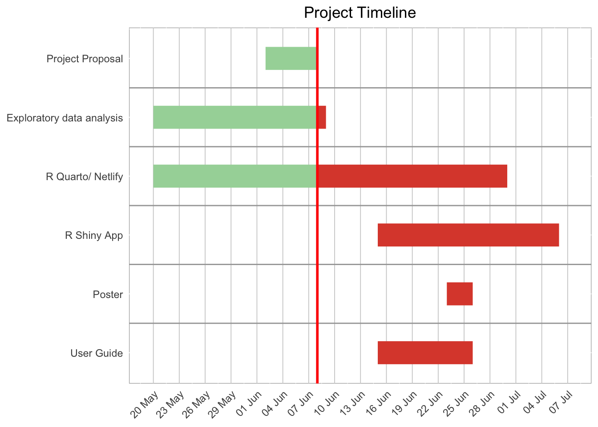

%%{
init: {
'theme': 'default'
}
}%%
flowchart TD
A[in:mc3.json] -->|Data Preparation| B(Read Input)
B --> C{Clean Data}
C -->|Save| E[Knowledge Graph]
E -->|Nodes + Edges| D[Extract sub-networks]
C --> M[Visualisations]
M --> R[Timeseries Plots]
M --> S[Chord Diagrams]
M --> T[Alluvial Diagrams]
M --> U[Wordclouds]
U --> V[Circular Barcharts]
V --> Z[Shiny App]
T --> Z[Shiny App]
S --> Z[Shiny App]
R --> Z[Shiny App]
D --> F[Ego Network]
D -->|Louvian| G[Commumity Network]
D -->|PageRank| G[Commumity Network]
D --> H[2-hop Network]
F --> Z[Shiny App]
G --> Z[Shiny App]
H --> Z[Shiny App]
Project Proposal
Motivation
Clepper, a lead investigator on Oceanus, has been closely monitoring the closure of Nemo Reef. Over the span of two weeks, he and his intern listened to and analyzed radio communications and utilized his investigative tools to uncover a complex web of expedited approvals, hidden communication, and secretive logistics. Their investigation revealed a story involving high-level Oceanus officials, Sailor Shift’s team, local influential families, and the Green Guardians, who are a local conservationist group, pointing towards possibilities of corruption and manipulation. Amidst this investigation, Nadia Conti, a known figure formerly entangled in illegal fishing operations, has resurfaced as a person of interest. The project aims to develop new and novel visual analytics techniques to support Clepper’s investigation in uncovering the full extent of the events on Oceanus.
Objectives
This project aims to build interactive visual analytics tools to uncover the story:
Identifying daily temporal patterns in communication to detect recurring message timings.
Analysing the shifts in communication patterns across the two weeks.
Focus on specific entities to determine influence within the network.
Visualising the interactions between people and vessels to explore the interactions and relationships in the knowledge graph.
Applying community detection to uncover groups that are closely associated with the community and the topic areas predominant for each group.
Detecting which person or vessel is using pseudonyms and unraveling them.
Identifying common entities in the knowledge graph.
Understanding of the activities by unraveling pseudonyms and tracking their interactions.
Providing evidence through visual analytics to determine whether Nadia Conti is engaging in illicit activity.
Presenting a summary of Nadia’s actions and visual reasoning behind any suspicion.
Data
The project will examine the data from VAST Challenge 2025 Mini-Challenge 3. The data contains the information to build a knowledge graph describing the last two weeks on Oceanus. It contains 1,159 nodes and 3,226 edges.
Nodes are one of three types: Entity, Event, Relationship. Entities are connected via an edge to other Entities via an Event or Relationship node. The one exception to this is the Communication Event subtype, which is additionally linked via edge to either an Event or Relationship node.
Methodology
To answer these questions, we investigated communications and relationships among entities. We did this by creating visualisations such as subgraphs of networks, chord diagrams, timeline plots, wordclouds, circular bar charts, and sankey diagrams. Then we tabled the findings, and discussion/ interpretations.
%%{
init: {
'theme': 'base',
'themeVariables': {
}
}
}%%
flowchart TD
A[in:mc3.json] -->|Data Preparation| B(Read Input)
B --> C{Clean Data}
C -->|Save| E[Knowledge Graph]
E -->|Nodes + Edges| D[Extract sub-networks]
C --> M[Visualisations]
M --> R[Timeseries Plots]
M --> S[Chord Diagrams]
M --> T[Alluvial Diagrams]
M --> U[Wordclouds]
U --> V[Circular Barcharts]
V --> Z[Shiny App]
T --> Z[Shiny App]
S --> Z[Shiny App]
R --> Z[Shiny App]
D --> F[Ego Network]
D -->|Louvain| G[Community Network]
D -->|PageRank| G[Community Network]
D --> H[2-hop Network]
F --> Z[Shiny App]
G --> Z[Shiny App]
H --> Z[Shiny App] Explanation
Data Preparation: Cleaning data to what is required for analysis.
- Cleaning and building nodes
- Cleaning and building sender and recipient information as edges.
- Linking Event + subtype of Communications with content
- Linking Event + subtype of Monitoring with findings
- Linking Event + subtype of VesselMovements with destination
- Linking Event + subtype of Assessment with results
- Linking Relationship and subtype of Coordinates with coordinate_type
- Linking Relationship and subtype of Operates with operational_type
- Linking Relationship and subtype of Jurisdiction with jurisdiction_type
Statistical Analysis: To apply statistical methods to help in analysis
- Perform Louvain Community Detection
- Calculate measures of centrality to identify influential nodes
- PageRank centrality for the nodes that hold the most influence
- Combine Louvain Community Detection with PageRank centrality
Data Exploration & Visualization: To identify patterns and trends in the network and derive inferences from them.
- Interactive network knowledge graphs, subgraphs, and visualisations to view relationships between entities
- Shiny app for users to interact and change parameters for analysis
- A time slider will be provided to easily see how the network changes through time
- By looking at various network structures, identify the following:
- Communications
- Pseudonyms and Real Identities
- Communities
- Extend of Events
Prototype Sketches
Our shiny app will look at network and temporal patterns, with the network graph as the core visualizations, with other tables and charts as accompanying visualization.
Website Look

Shiny Applications on Networks and Visualisations

The Shiny app will include some of these parts.
Knowledge graph
As the entire network is very large, containing 1,159 nodes and 3,226 edges, it is not suitable to visualize the entire network. Hence, we will plot with subgraphs and other visualisations.
Reference Node
For Nadia’s ego network, we require a reference node (Nadia).
Network depth
In relation to the reference node, this serves to narrow down the network to view. The depth dictates how far from the reference node to network. As Nadia’s networks are at distance 1 or distance 2, we will add an option to toggle whether to render the full network or use the option to render by distance to the reference node.
Plot area
Shows the network or visualisation plot. It will be interactive to enable closer inspection of network or visual elements.
These are some prototypes of the webpage and shiny application that we are planning to build for the project. The whole concept of this storyboard is mainly to allow the user to utilise interactive visualisations such as timeseries slides, clickable components, or hovers to get to the bottom of the activites brewing at Oceanus such as the Nemo Reef Operation. Hence, enhancing the whole user experience as they follow us along on uncovering the story.
R Packages
We used the following R packages
jsonlite - To parse JSON
tidyverse - Data science tools
ggtext - Tools for text formatting
knitr - For better table displays
lubridate - For processing date and time
hms - For durations
scales - For breaks and labels
tidytext - For functions text mining
tm - For text mining
SnowBallC - For Porter’s word stemming
magick - For graphics and image processing
SmartEDA - EDA with some graphing
reactable - For interactive data tables
ggraph - For plotting network data
tidygraph - For graph manipulations
igraph - Contains functions for network analysis
ggiraph - Interactive plots
scales - Formatting ggplot scale
patchwork - For combining ggplot plots
plotly - Interactive plots
wordcloud- For frequency representation of words
ggh4x - For axis, strip, and facet customizations
visNetwork - For interactive visualisation of networks.
ggplot2 - For building plots
RColorBrewer - Colour schemes for graphics
circlize - For circular plots
ggalluvial - For alluvial diagrams
wordcloud2 - For creating wordclouds
shiny - Creating interactive apps in R
shinywidgets - Extensions of shiny inputs
shinyjs - Executing JS code in shiny for enabling and disabling Shiny inputs
Project Schedule
Show code
pacman::p_load(vistime, ggplot2)package 'assertthat' successfully unpacked and MD5 sums checked
package 'vistime' successfully unpacked and MD5 sums checked
The downloaded binary packages are in
C:\Users\roxyy\AppData\Local\Temp\RtmpOgXMtw\downloaded_packagesShow code
data <- read.csv(text = "event,group,start,end,color
,Project Proposal,2025-06-02,2025-06-08,#a5d6a7
,Exploratory data analysis,2025-05-20,2025-06-08,#a5d6a7
,Exploratory data analysis,2025-06-08,2025-06-09,#DD4B39
,R Quarto/ Netlify,2025-05-20,2025-06-08,#a5d6a7
,R Quarto/ Netlify,2025-06-08,2025-06-30,#DD4B39
,R Shiny App,2025-06-15,2025-07-06,#DD4B39
,Poster,2025-06-23,2025-06-26,#DD4B39
,User Guide,2025-06-15, 2025-06-26,#DD4B39")
data$start <- as.POSIXct(trimws(data$start), format = "%Y-%m-%d")
data$end <- as.POSIXct(trimws(data$end), format = "%Y-%m-%d")
proposal_deadline <- as.Date("2025-06-08")
p <- gg_vistime(data, title = "Project Timeline")
p +
geom_vline(xintercept = as.numeric(as.POSIXct("2025-06-08")), color = "red", size = 1)+
scale_x_datetime(date_breaks = "3 days",
date_labels = "%d %b",
expand = expansion(mult = c(0.06, 0.08)) # adds space
) +
theme_minimal() +
theme(
plot.title = element_text(hjust = 0.5), # Centered title
axis.text.x = element_text(angle = 45, hjust = 1),
panel.grid.major.x = element_line(color = "grey80", size = 0.3), # vertical grid
panel.grid.major.y = element_line(color = "white", size = 0.3), # horizontal grid
panel.grid.minor = element_line(color = "white", size = 0.2),
panel.background = element_rect(fill = "white", color = "grey70", size = 0.5), # border
plot.background = element_rect(fill = "white", color = NA)
)